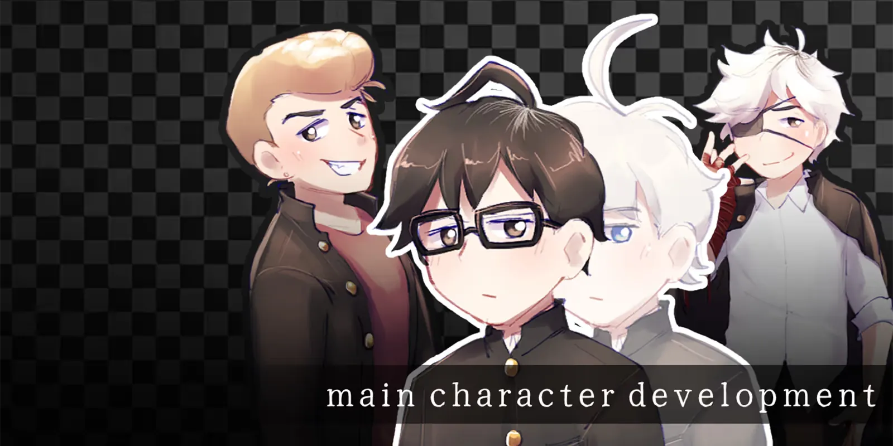
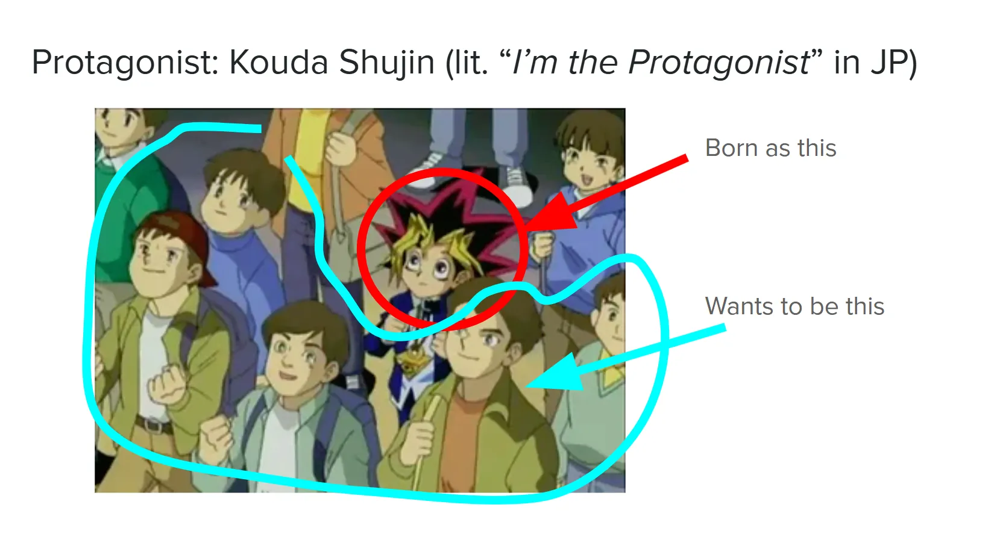
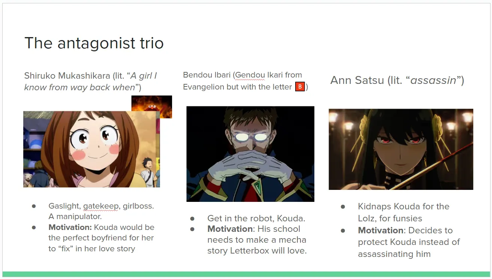
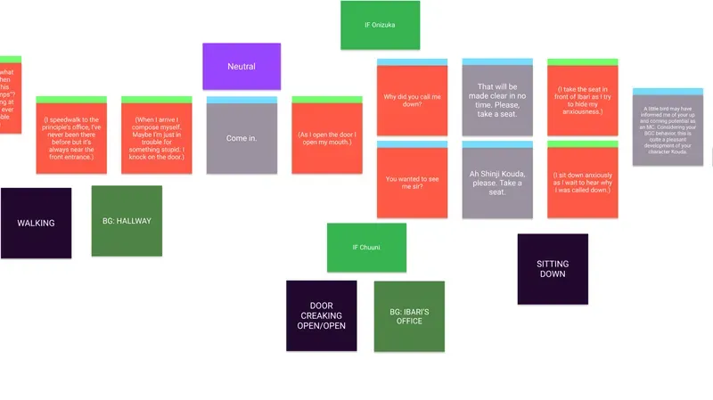

Main Character Development
ROLES
Scriptwriter, Composer
Takeaways
- Explored subverting traditional protagonist tropes while still adhering to the hero's journey.
- Utilized flowcharts to map out the narrative structure, sound design and art for game development.
- Translated a linear story into an interactive structure that engages the player through giving them agency as the main character.
Project Overview
Main Character Development is a visual novel following Kouda. They were born to be a main character and yet has tried their hardest to avoid such a lifestyle. Alas they're forced to enter this it in order to find out what happened to his one and only friend.
You can play the game on itch.io here: Main Character Development
Main Character Development was a academic project for Simon Fraser University completed within four months, I worked alongside Trisha, Ben and Jerick. My responsibilities included as writing the script alongside Trisha in Final Draft, creating the final flowchart alongside Jerick in Figma, as well as composing the music for the game in FL Studio. In my Narrative and New Media course, I was grouped with others based on the types of stories we were drawn to and discussed ideas we thought of create an interactive piece. We began by writing a script in the context of a film, and later transitioned the medium to a visual novel game.

Context
Genre: Adventure, Visual Novel
Team Size: 4
Platform: PC (Windows & Mac)
Development Time: January - April 2023 (4 months)
Tools Used: Final Draft (Scriptwriting), Figma (Flowchart), FL Studio (Music), Audacity (Sound Design)
Objective & Phase One
Initially, I was paired with Trisha and we were tasked to create a story in the context of a 30-minute film. Our project had two phases: first, we brainstormed, ideated, and wrote the script. Next, we took that script and adapted it to a different medium. During the second phase, we decided to adapt the script to fit a visual novel.
Trisha and I were paired up due to aligning in interests of stories with a focus on character development and anime, at first, we ideated loglines to see what stuck out the most to us, and eventually settled on the idea of a main character who tries to avoid being a main character. We thought this was an interesting concept to explore as it subverts the typical trope of a protagonist who is destined for greatness, and instead focuses on a protagonist who is trying to avoid such a lifestyle allowing us to poke fun at tropes for a more light-hearted story.
At first, we ideated on the characters and flow of the story, going from deciding on 7 to 15 events we want to happen in the story before proceeding to create a general beat sheet for the story. We originally planned on having three antagonists, but were advised that, in the context of a 30-minute film, it would be difficult to pull off without the story feeling rushed. To resolve this, we removed one antagonist and turned another into a disguise for the main antagonist,allowing us to still have the same plot points while also giving us more time to develop the characters and their relationships with one another.


Phase Two
During this phase Trisha and I were then paired with Ben and Jerick. To adapt our script that's helpful for planning out a visual novel we opted to create a flowchart in Figma. The flowchart would have details regarding dialogue, choices players can make, when sprites or backgrounds appear and when sounds or music plays.
We each assigned tasks to each other and made sure to communicate to one another whether or not we thought our workload was fair and played to our strengths. We settled on Trisha creating the artworks for the character sprites, Jerick would work on the flowchart, gather sounds and also handle the backgrounds, Ben would handle the coding for the game and I would create the music and assist Jerick with working on the flowchart as well as gathering sound effects.

Composing
Our main issue was the amount of time we had compared to the amount of work we had considering we all had additional classes to do on top of this project. For the music, we all read over the first act of the story to figure out what kind of tracks I'll need to compose for the game and we figured that we needed a Happy track, a suspenseful track and a sad track. I also tried composing character tracks, but unfortuantely didn't pace myself well enough to make one for all of the characters. For these tracks I grabbed reference tracks to get an idea of what kind of track he should create. For example, for a delinquent character's theme, the main inspiration for the track was Jun created by Takuro Yoshida, using it as a reference I created the theme for the delinquent character, Onizuka.
The resemblance to the reference track should be apparent but, I hope it manages to achieve a similar feeling while also being its own track. I utilized a similar process for the other tracks as well, using reference tracks to get an idea of the mood and instrumentation I should use for each track.
Conclusion
Main Character Development was well received by our professor, and was even featured on the SFU Showcase for Spring 2023. My contributions to the project with the music and story to the game helped it achieve the feeling we wanted during certain scenes as well as creating believable characters with a sympathetic goal and development (hehe).
From my experience working on the project I learned the importance of pacing myself as there were more tracks I wanted to create for the game. Being strict with myself through creating a schedule to follow will be a step in the right direction. I also learned the usefulness of utilizing Figma to write out the flow of the game, as it allowed me to make it easy for the programmer to know when certain sounds, expressions, backgrounds or songs should play without needing to ask me and also made it easy for me to keep track of what I needed to do as well.